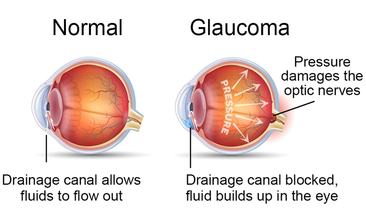

When the blood vessels overgrowth involves the eyes, glaucoma is the most common diagnosis. Glaucoma is an eye condition related to the damage of the optic nerve (the connection between the retina and the brain), which may result in blindness or vision loss. It commonly occurs when the fluid pressure inside the eye rises and wears out the optic nerve.
 The optic nerve is a bundle of more than 1 million nerve fibers. It connects the retina to the brain. The retina is the light-sensitive tissue at the back of the eye. A healthy optic nerve is necessary for good vision.A glaucoma can be diagnosed right after the birth, even when still at the hospital, thus receiving medical attention within the first week of life. Typically, the white portion of the eye appears "bloodshot" as a result of the over-proliferation of blood vessels. It’s anyway recommend to check on the affected eye as soon as possible.
In general, if one eye suffers from glaucoma, there’s a 30% chance that the other eye can be affected too. On top of that, when the port wine stain affects aye lids, there’s a lifelong high chance that the eye can develop a glaucoma. Therefore is highly recommended to perform regular ophthalmic checks on it.
Usually in the beginning there are no symptoms. It is important to note that glaucoma can happen to anyone especially if there is family history or within specific ages or racial groups or high blood pressure.
There are numerous types of glaucoma, yet the most common two are open-angle and angle closure glaucoma. For newborns with glaucoma at birth, it is commonly known as congenital glaucoma.
Here is a list of most known:
It is very important to have regular eye examinations in order to detect it. It is usually noticed through a comprehensive dilated eye exam (drops placed in the patient’s eyes to widen, or dilate, the pupils) that includes the following:
Immediate and early intervention of glaucoma can delay progression of the disease. That’s why early diagnosis is so important. Treatments vary depending on the type of glaucoma. In general, treatments include medicines, laser trabeculoplasty, conventional surgery, or a combination of these. People without treatment slowly lose their peripheral or side vision eventually having straight-ahead vision as if looking into a tunnel until there is no longer any vision at all. It is important to understand that increasing pressure in the eye is reversible. What is not reversible is the damage of the optic nerve due to high pressure. In order to prevent complications, patients can recur to medication or surgery. Early intervention is the best way to protect eyes against vision loss.
They come in the form of eyedrops or pills. They are the most common early treatment for glaucoma. Eyedrops lower eye pressure and are usually taken regularly. Another important factor is that because glaucoma often has no symptoms, patients might be tempted to stop taking, or may forget to take, their glaucoma medication. Drops or pills need to be taken as they help control the eye pressure. Regular use is very important!
This helps fluid drain out of the eye. Doctors may suggest this step at any time. In frequent cases, taking glaucoma medicines after this procedure must continue. If there is glaucoma in both eyes, usually only one eye will be treated at a time. In general, studies show that laser surgery can be very helpful at reducing the pressure in some patients. However, the effects can wear off over time. The doctor may suggest more treatment.
This makes a new opening for the fluid to leave the eye. Doctors may suggest this treatment at any time. Conventional surgery often is performed after medicines and laser surgery have failed to control the eye pressure. This type of surgery is performed in an operating room and is done on one eye at a time, usually four to six weeks apart. It is 60 to 80 percent effective at lowering eye pressure. If a patient has not had previous eye surgery, such as a cataract operation, conventional surgery works best.